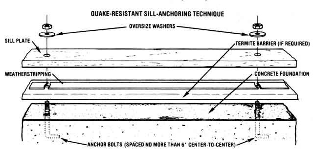

If you're planning new construction, you may well want to incorporate this low-cost way to . . .
Although it's true that some parts of the country, such as California, are more prone to earthquakes than are others, it's also true that virtually no place in the United States is entirely safe from the threat of quake damage. All or parts of 39 of our states lie in zones classified by scientists as being at risk from seismic shocks of moderate (magnitudes of 6 to 7 on the Richter scale) or major (magnitudes greater than 7) strength. Thus, more than 70 million people in this country are exposed to significant quake-related hazards. And no state is completely free from the possibility of at least "minor" damage from these natural upheavals.
In our part of western Washington, in fact, ground tremors are fairly common . . . and the potential for a substantial quake is very real. So when I built a 24' X 40' barn and two 25' X 28' workshops about ten years ago, I incorporated a relatively inexpensive and very simple building technique that has since protected those structures through more than a decade of recurrent ground tremors ... including the considerable shaking we experienced when Mount St. Helens-just 90 miles away as the crow flies-erupted in 1980.
SHAKE, RATTLE... AND BREAK
Although earthquakes can produce more than one kind of shock wave (some travel vertically, some horizontally, and others in circular patterns), it is horizontal acceleration (the side-to-side movement of the earth) that causes the greatest amount of severe damage. The concrete foundation of a building tends to move with these vibrations during a tremor, and if the above-ground portion of the structure is not firmly secured to the base, the framework can break away . . . resulting, of course, in partial-or total-collapse.
According to the Uniform Building Code (UBC), which has been adopted widely by inspection authorities throughout the country as a standard for all new construction, wood-frame structures with concrete or reinforced masonry foundations must be affixed to their bases by a specific method: First, anchor bolts of at least 1/2" in diameter (most builders use hardware that's 5/8" in diameter by 10" long) are embedded vertically 7" or more into the foundation-all along the perimeter, at intervals of no more than 6'-with a portion of each bolt projecting above the mortar or concrete. Then the building's sill plates (the bottommost, horizontal wooden members of a frame structure) are drilled so they'll slip down over the protruding anchor bolts, and once the plates are set in place-flush against the foundation-nuts are tightened down onto the wood.
This method of anchoring sill plates does keep the boards attached to the foundation during an earthquake, but it fails to help the structure as a whole absorb and withstand the forces of seismic shock. However, my technique-a simple variation of the standard procedure-allows a building to move with its foundation during the course of a quake, and also provides a bit of flexibility and cushioning between the base and the sill . . . thus offsetting at least some of an upheaval's shearing effect.
LOW-COST, LOW-TECH QUAKE "INSURANCE"
The only additional building materials required for my anti-quake construction technique are [1] oversize washers (in other words, washers with center holes matching the diameter of your anchor bolts and relatively large outside diameters such as 1-1/4" or 1-1/2") and [2] self-sealing weatherstripping at least 1-1/2" wide. You'll need as many washers as there are anchor bolts in the foundation, and an amount of weatherstripping equal to the total length of the building's sill plates.
Now, when drilling holes in your sill plates to enable you to slip the boards down onto the anchor bolts, bore the cavities 1/8" larger in diameter than the bolts themselves. (Thus, if you're using 5/8" anchors, you'll drill 3/4" holes.) But before actually installing the sills, place the weatherstripping directly on top of the foundation, between the anchor bolts, where the boards will lie. Then carefully position the predrilled sills over the anchor bolts and press the plates down firmly onto the cushioning material.
Finally, drop an oversize washer over each anchor bolt and tighten a nut firmly down onto the disk. The washer should actually bite into-in other words, make a depression in-the wooden sill. In some regions, the local building codes may require placement of a termite barrier - a strip of aluminum or galvanized steel-between the foundation and sill. If that's the case in your locality and you're following my technique, simply install the barrier first, place the weatherstripping on top of the metal, and then fasten down the plates.
Drilling the sill-plate hole 1/8" larger than the anchor bolt's diameter provides a minute amount of side-to-side "give" that reduces the brittleness of the conventional sill-to-foundation attachment and thus helps to prevent shearing. In addition, the weatherstripping acts as a cushion between the base and framework, making the whole assembly somewhat more flexible and able to absorb ground shocks (by the way, the self-sealing material also provides a watertight seat between the foundation and the sill).
Of course, much of the beauty of this method is its extraordinarily low cost. When quake-proofing a typical 24' X 40' building, for example, you might use as many as 40 anchor bolts, and the total length of the sill plates would be 128'. In my part of the country, 5/8" X 1-1/2" washers cost 304 apiece, and 1-1/2" weather-stripping runs 20 cents a foot. You'd pay $12.00 for the 40 washers, therefore, and $25.60 for the cushioning . . . for a total cost of $37.60. That's a mighty small investment compared with the repair (or rebuilding) expenses that it could help you avoid!
SAFETY IS RELATIVE, THOUGH
My local building inspectors have approved this technique as an effective way to minimize the potentially destructive forces of seismic shock (be sure to get a similar OK from your local officials, though, before you incorporate my method into your own construction). I certainly don't claim, however, that it's a guarantee against damage from an earthquake. In fact, there's probably no real protection from the forces of a truly substantial quake (the energy released by the 1964 Alaska earthquake, for instance, was estimated to equal the power of 12,000 Hiroshima-type nuclear bombs!). But at least there's something you can do-for relatively little money-to give your home and outbuildings a better chance of surviving tremors or a quake of minor, or perhaps even moderate, magnitude. And that extra measure of protection, I think, is well worth the little additional expense and effort!.
|
 |
|
|